Чтение участка
Солнце, ветры, потоки, соседство зданий.
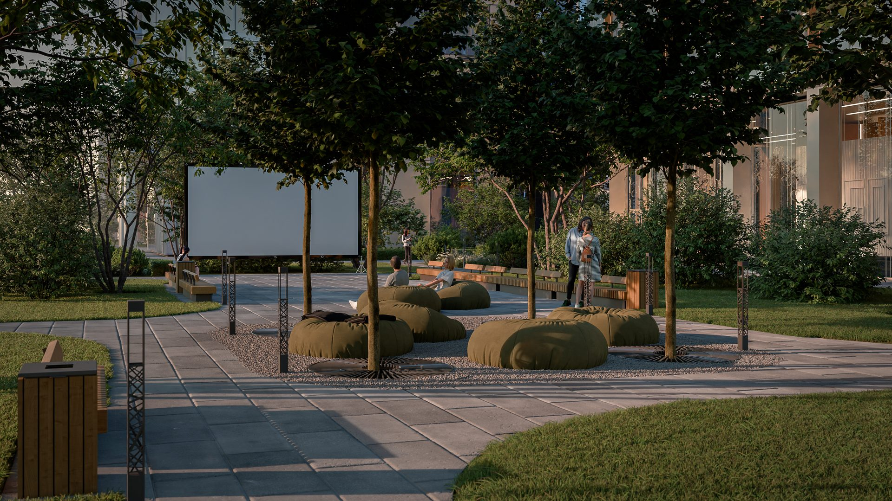
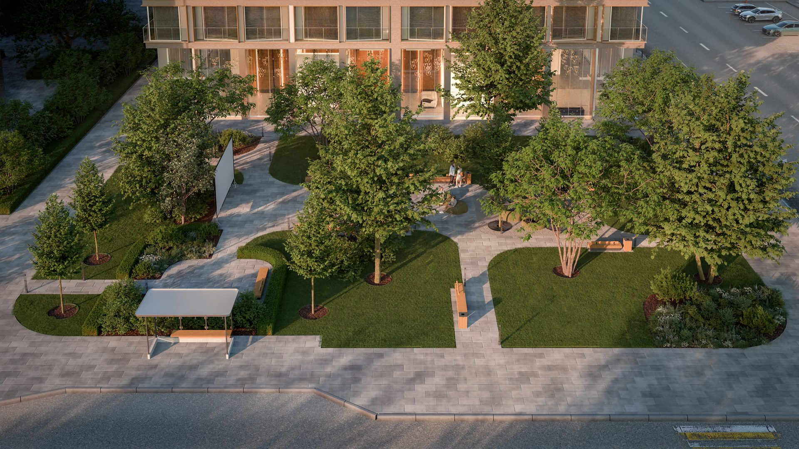
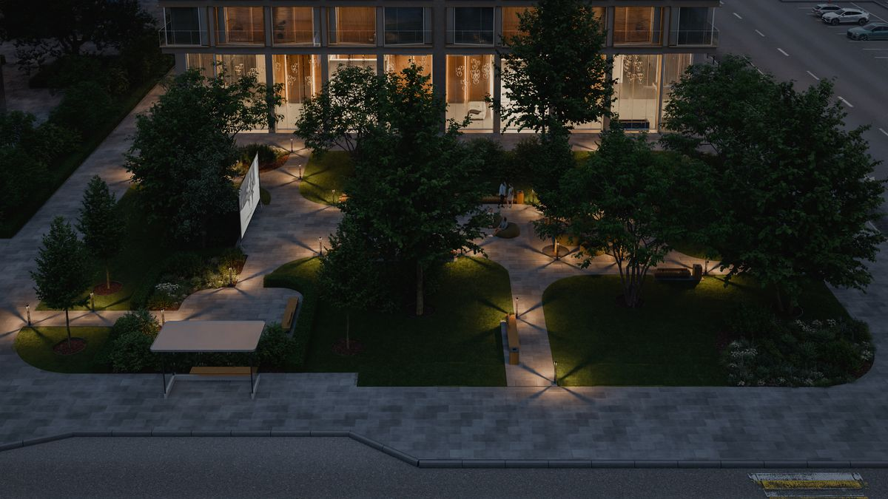
Занимаюсь комплексной разработкой ландшафтных проектов — от концепции до рабочего проектирования. Опыт работы с частными и городскими объектами. В профессии 10 лет. Образование: Московский государственный университет леса, 2016.
Сценарии на участке, посадки, покрытия, свет и чертежи для реализации.
Солнце, ветры, потоки, соседство зданий.
Зонирование, характер посадок и материалов.
МАФ, свет, ассортимент, покрытия.
Документация для подрядчика.
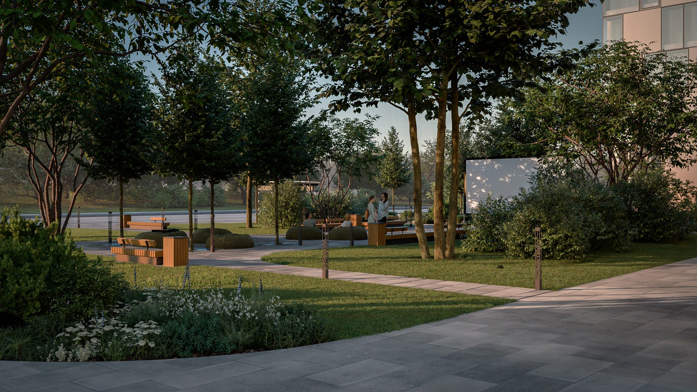
Социальное ядро двора: экран, мягкая посадка, свет и зелёный каркас.
Открыть проект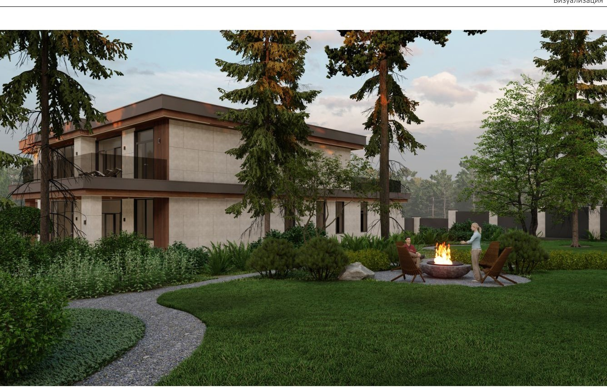
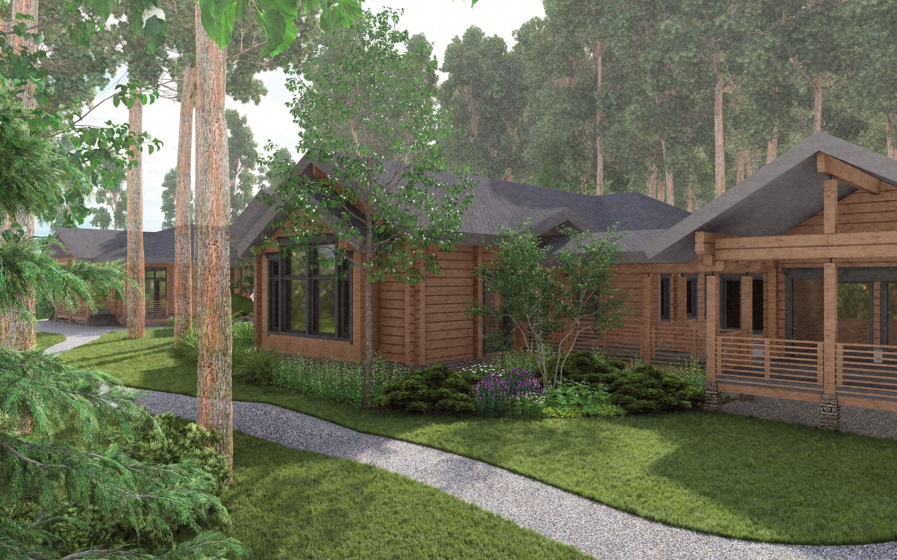
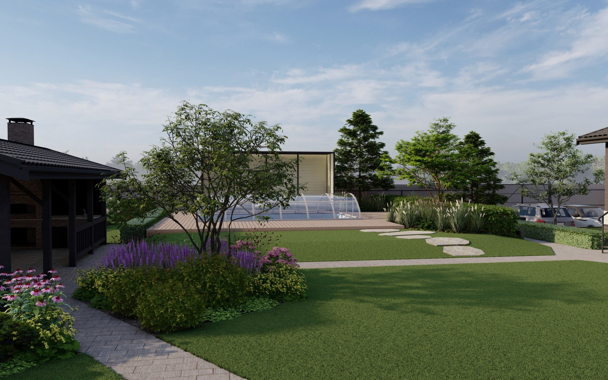
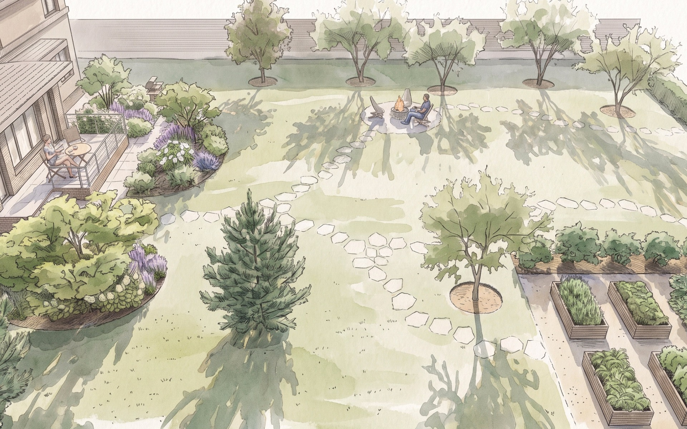
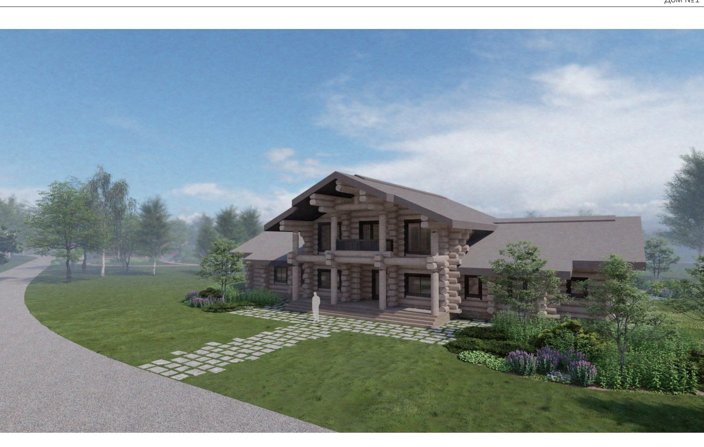
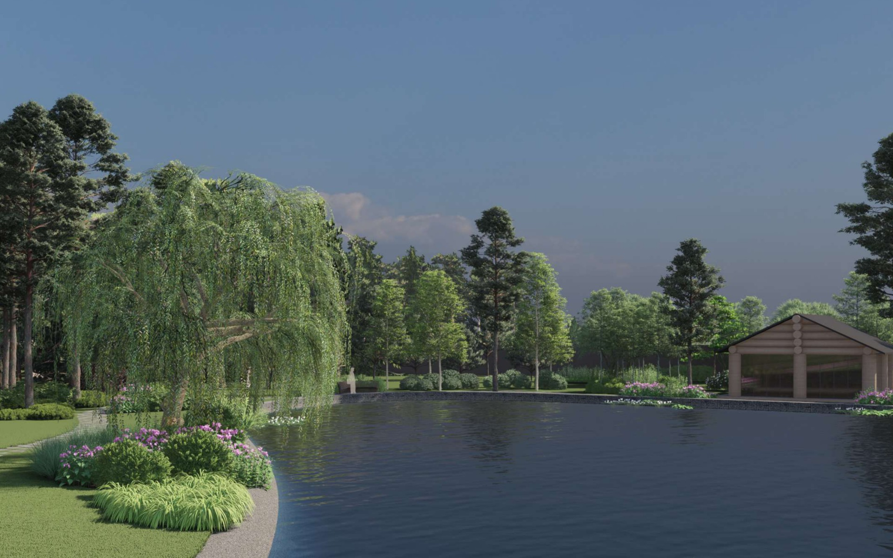
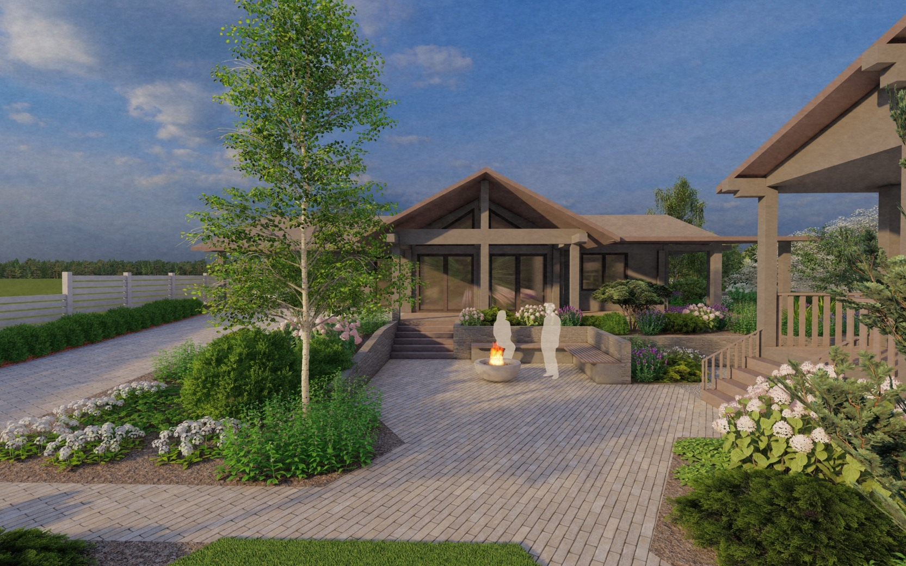
Свежие PDF с Диска — открываются по имени.
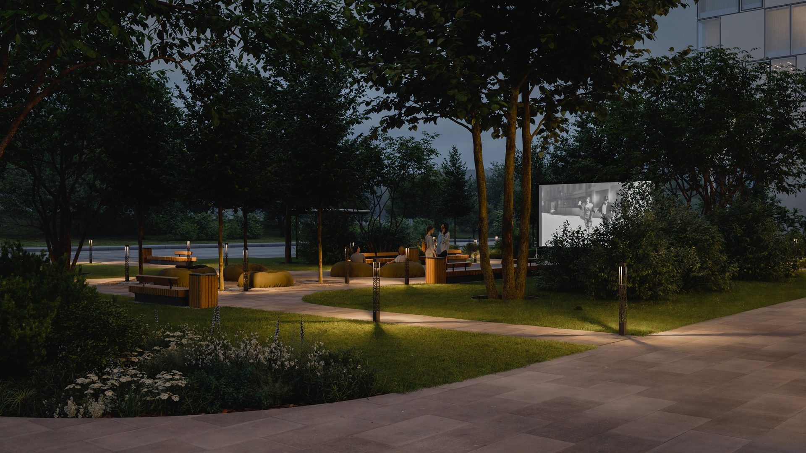